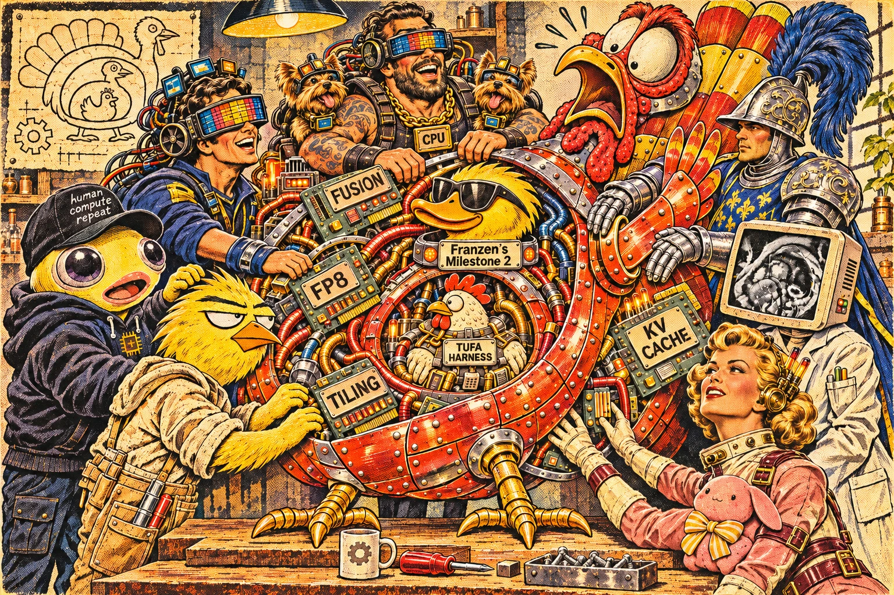
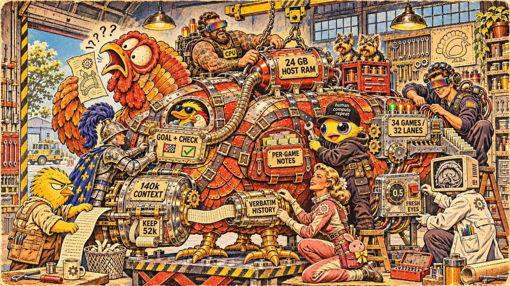
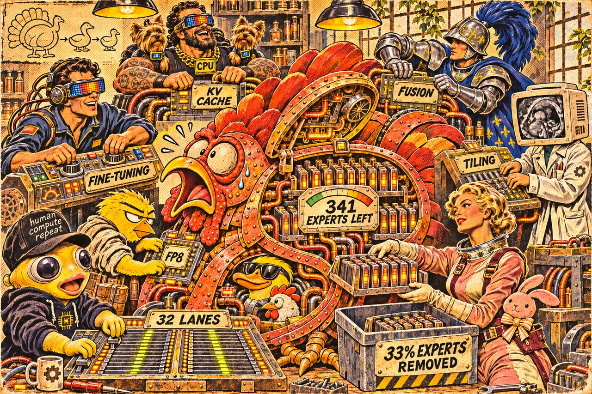
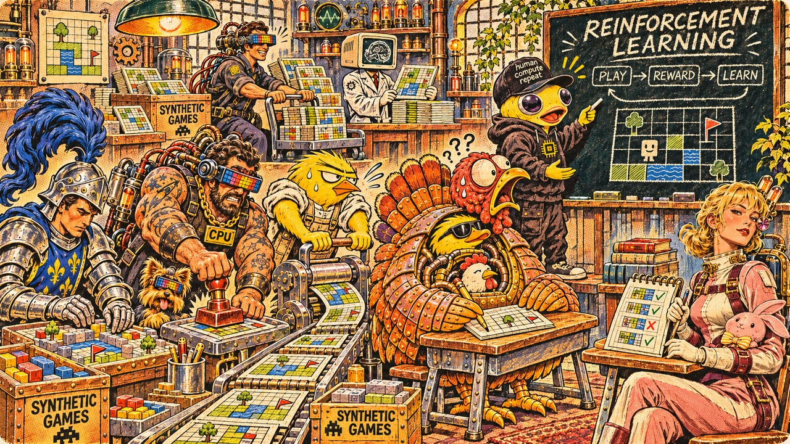
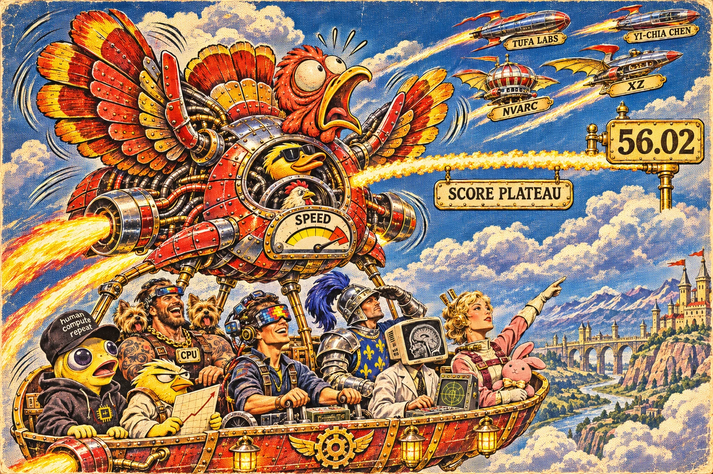
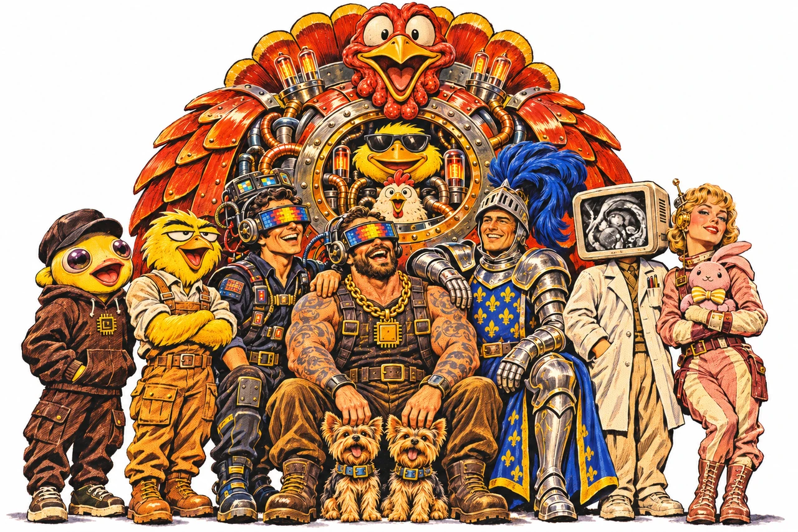

Stuffing the Turducken
Hi everyone! Before anything else, thank you to everyone who took part in this competition. It has truly been an honor to compete with you all. The level of inference engineering reached the stratosphere over these six months, and that would not have happened without everyone's relentlessness.
Our team name is a tribute to Tufa Labs, whose harness sits at the heart of our entry, and to Daniel Franzen, whose public Milestone 2 notebook we built on. More thanks, to them and to many others, at the end.
Why a turducken? A turducken is a real American Thanksgiving treat: a deboned chicken stuffed inside a deboned duck, which is then stuffed inside a deboned turkey. The name combines turkey, duck and chicken. That nesting is our metaphor: Tufa Labs' harness is the chicken, Daniel Franzen's notebook is the duck around it, and our engineering optimizations are the outer turkey. It also fit us: when the teams combined we needed a name, and wrapping all of us up into one big team was just what a turducken does. Somewhere in October we realized what this competition had turned into: stuffing as much inference engineering into the Turducken as possible.

TL;DR
- Base: Daniel Franzen's public notebook from 1 October. 110 games on one RTX PRO 6000 in 9 hours.
- Harness: notes memory, goal first, checked play, temperature 0.5, and a lot of work on trimming and swapping 110 conversations through one card.
- Inference: 191 speed changes tried, 69 shipped. 2,150 tokens per second over a whole run, 32 games at once. Per 1,000 tokens: decode 1,138 → 330 ms, prefill 259 → 74 ms, overhead 255 → 61 ms.
- RL: none of our training attempts beat the base model on Kaggle.
- Two biggest lessons:
- We didn't notice when token quality started to matter. After 56.02, every faster build we shipped scored lower.
- We were too ambitious with recovery. We tried to bring 2-bit back to 4-bit quality when settling for 3-bit was the better bet. Past some point, lost token quality can't be recovered.
The Harness

1.1 How the harness works
Our best public-leaderboard score, 56.02, came from our submission of 23 October, and we call the harness inside it the Turducken harness. We built it from 1 October on Daniel Franzen's public Milestone 2 notebook, which is in turn built around Tufa Labs' harness. Each of the 110 games runs as its own conversation with the model, and the model plays by writing code. It has exactly one tool: python.
One turn goes like this:
- The harness sends the current frame as a 512 px image (the 64×64 grid at 8x), an image of what changed since the model's last look, and a short text update on the game's state.
- The model thinks, then calls
pythonwith a snippet. The game is preloaded in the sandbox:current_frame(the board as objects, with colors, positions and what touches what),previous_frame,historyandvalid_actions. - The snippet plays moves with
action([...]), one move or a whole planned batch, and the state refreshes after each one, so a single call can probe, loop or run a search. - The printed result comes back, and the model can call
pythonagain, as often as it likes. Each call has a 30-second limit.
Here is one real turn from a saved run, step by step: what the model was told, what it saw, what it thought, the code it ran, and what its moves did to the game.
![Animation in eight steps, from one real turn of Reaching Lurch, level 2. One: excerpts of the system prompt, marked game rules, notes memory, and one tool with own functions. Two: the turn message listing ten helper functions the model wrote earlier, and the board it sees. Three: its reasoning. Four: a python call that defines two helpers and simulates ten clicks, with the printed plan. Five: more reasoning about checking each click. Six: the python call that plays the ten clicks through run_checked. Seven: the output lines appear one per click while the recorded board on the right changes, until both knobs sit in their rings and the level is cleared. Eight: on the next turn the model writes the level's mechanics into its notes and the new helpers are listed back.](arc3-solution-draft/charts/turn-tall.webp)
20261023_1410_daniel-candnp3-a, an offline-evaluation run of the 56.02 package. Prompt text, reasoning, code and output are verbatim, cut only where "…" shows, and the boards are the run's recorded frames. The last step is the first python call of the following turn. The coloured chips and the yellow notes are ours.On top of that loop, the Turducken harness keeps these things for the model:
- Its own functions: helpers the model writes (a path search, an object finder) stay defined for the whole game and are listed back to it every turn, so a tool built on level 1 is still there on level 6. This comes from Daniel's notebook, which already keeps them for the whole game; we kept his setting.
- Notes memory: one markdown
notestext per game, written from insidepythonand held by the harness, so it survives timeouts and history trims. It is shown again after every trim and at every new level, as head + tail once it passes 6,000 characters. - Goal first: on a level's first turn, the model writes what "solved" looks like into its notes before it acts.
- Checked play:
run_checked([(move, expect), ...])plays moves and stops at the first one that doesn't do what was expected;check_rule(rule)tests a candidate rule against every recorded move of the level. - Fresh eyes: when a level eats 120k generated tokens without a clear, the model writes a handover note of at most 400 words, the conversation is cleared, and play continues on the same board, at most 3 times per level. The notes survive the wipe.
- Sampling: temperature 0.5 (0.8 → 0.6 → 0.5 over the competition), top-p 0.95, top-k 20.
We also tried notes shared across games, fancier memory, timed restarts of stuck levels, caps on thinking per turn, and a trim gate that let a trimmed game keep its lane. None did better than the list above.
Context management
All 110 games open at the start and share one 9-hour clock, but the card holds 3.80M tokens of cached history and decodes only 32 games at once. Four mechanisms in the harness and the server let 110 conversations share it:

- Trimming. When a game's prompt reaches the 140k-token window, the harness drops its oldest turns and keeps the system prompt, the notes and the most recent ~52k tokens. The start of the prompt has changed, so the server's prefix cache no longer matches and the kept 52k must be prefilled again. The server logs of two 56.02 offline-evaluation runs show about 340 trims per run, about 46k tokens each: half of all prompt tokens, but only 8% of the clock.
- Swapping. 34 games are admitted at a time, so 32 can decode while two run
python; the other 76 wait. An admitted game gives up its slot only right after a trim, when its cached history is invalid anyway and leaving costs nothing. - Priority queue. The freed slot goes to the waiting game with the highest expected remaining score, estimated from the levels it could still clear and how much it has already spent on its current level, so games with high potential play first. The queue comes from Daniel's notebook.
- Host copy. Host RAM keeps a 24 GB write-through copy of everything the card caches. When the card has to evict a game's history, the history comes back over PCIe instead of being prefilled again; with the copy, the number of games losing their history fell from 9 to 0.
Almost every harness setting is lossy: it changes what the model says, so the only way to judge one is to play games with it. That is where the hard part was.
1.2 How we measure performance
Kaggle only gives us one submission a day, and a single score from it carries way too much variance to tell us whether an idea actually helped. So we did the measuring ourselves, locally, before spending a submission.
We started with the 25 public games on a 132-minute clock. Once we pushed to 32 lanes, 25 games weren't enough to keep every lane busy, so we built "copycat" games, one for each public game, and ran all 50 together.
ARC-AGI-3 games show very high run-to-run variance. Between repeat runs of an identical configuration, the score on a single game of middling difficulty can differ by 40 points or more. Over the whole 50-game set, eight identical control runs had a standard deviation of 1.9 points, so a comparison with two runs per arm resolves only effects of about 4 points, and most harness ideas were smaller than that. Kaggle adds noise of its own: resubmitting an unchanged package moved its score by 3.4 points. We therefore judged each harness on at least four runs across control and experiment; effects smaller than this noise were, in practice, below what we could measure. (Our later authored games are public in the ARC-3 Synthetic Games repository; they are not the copycats measured here.)
1.3 Performance so far
In the end, only three changes to the harness itself gave a real jump on Kaggle (the speed work is in Part 2). Here they are, each one measured against the package it was added to:
- Notes memory: +8.8, our biggest gain (the same package also restored exact draft acceptance).
- A bigger window (140k) with temperature 0.5: +5.4.
- Notes shown as head + tail, with crash fixes: +1.7, inside Kaggle's own noise.
Everything else we sent to Kaggle scored lower, even when our offline evaluation liked it. The offline evaluation liked 12 ideas; Kaggle agreed with only 3:

Open or download: vector SVG · high-resolution PNG

Looking across these results, the improvements that carried over to Kaggle tended to be generically useful tools: notes that survive a trim, and a larger window, help on any game. The ideas that did not carry over often targeted specific weaknesses we had seen in the public games. Our offline evaluation had the 25 public games at its centre, and the copycats were built from them, so an idea tuned against those weaknesses could look like progress offline and then fail on Kaggle's hidden games. We read this as a form of overfitting to the public set. It is an observation from a small number of submissions, not a measured result.
Inference Optimization

The model is Qwen3.8-Flash-Next with Intel's 4-bit AutoRound weights, served by Daniel Franzen's SGLang fork with MTP drafting. The scored run is 110 games on one RTX PRO 6000 (96 GB) in 9 hours. Every move costs a thousand-plus tokens of thinking, so the card's tokens per second turn into moves, and moves turn into levels.
One rule came before any change: is it exact or lossy? An exact change gives the same output bit for bit, so it ships on a speed test alone. A lossy change changes what the model says, so it has to win games first. The lessons at the end come back to this rule: several lossy changes only tied in our offline evaluation, and scored lower once they reached Kaggle.
Every second of a run, the GPU is doing one of three things:
- Decode: writing tokens. A small draft head guesses 3 to 4 tokens ahead for each game, and the big model checks every guess, for every running game, in one pass.
- Prefill: reading prompts. Either the new content of a turn (the new frame, the tool output), or re-reading history the cache lost.
- Overhead: everything else. A fixed cost for every prompt read, CPU stalls, and lanes sitting empty.
Per 1,000 tokens of generated output, we took decode from 1,138 to 330 ms, prefill from 259 to 74 ms and overhead from 255 to 61 ms.
2.1 Decode: 1,138 → 330 ms per 1,000 tokens
Decode is memory-bound: at 12 games, one step reads about 20 GB of expert weights at 92% of the card's bandwidth. So the two big levers were reading fewer bytes and serving more games per read. More games per step needs memory, and every gigabyte we freed went to the history cache, because the cache decides how many games can decode at once.
Fit more games on the card
| Change | What it does | Measured | Exact or lossy |
|---|---|---|---|
| Expert cut | Removed the least-used third of the experts (512 → 341 per layer) | weights 66 → 46.2 GiB | lossy |
| 4-bit history cache | Keys and values in NVFP4 (the draft model keeps FP8) | 1.01M → 3.80M tokens of history, together with the cut | lossy |
| Free the 16-bit output head | Serve the head from its int8 copy | +0.57 GiB | exact |
| Deduplicate shared tensors | The draft and main models held separate copies | +2.04 GB | exact |
| 180 Mamba slots | Fewer spare linear-attention state slots | cache 3.47M → 3.80M tokens | exact |
| Peak memory log | Log the real memory peak so the cache can be sized to the edge | lowest headroom 1.9 GiB | exact |
Cheaper steps: dense layers and the output head
| Change | What it does | Measured | Exact or lossy |
|---|---|---|---|
| 8-bit dense weights | Dense layers and the output head in int8, one scale per 128 inputs | step 29.1 → 27.0 ms | lossy |
| 8-bit activations | Int8 inputs once a step has more than 64 rows | -3.5 ms per step at 192 rows | lossy |
| Int8 kernels by row count | Kernels sized for 33-48, 65-96 and 129-256 rows instead of padding | at 80 rows 5.21 → 3.55 ms | exact |
| Small 16-bit multiplies | A faster kernel for the few dense multiplies left in 16-bit | 9.76 → 9.12 ms per step | lossy |
| Fused layer mixing | The model's layer-mixing steps fused into fewer kernels | 2,575 → 2,131 kernels per step, -1.2 ms | exact |
| Output head in one launch | The int8 head writes the final logits directly | 1,494 → 1,127 µs at 192 rows | exact |
Experts and routing
| Change | What it does | Measured | Exact or lossy |
|---|---|---|---|
| Batch-aware routing | Steer tokens to experts the batch already reads, each token keeping its own top 3 (was 4) | +5% speed | lossy |
| One-kernel reroute and routing | The reroute, the cut-expert remap and expert selection each in one kernel | routing 22.3 → 6.9 µs per layer | exact |
| 16-row expert blocks | Smaller blocks when each expert gets only a few rows | 696 → 623 µs per layer at 184 rows | lossy |
Attention
| Change | What it does | Measured | Exact or lossy |
|---|---|---|---|
| Attention indexer | Load each block of keys once per game instead of once per draft token | 98 → 61 µs per layer | exact |
| 4-bit attention | Prefetch the next block, split keys 8 ways, read keys in order | 237 → 228 µs | exact / rounding |
| Linear attention | Read inputs in place, a one-tile conv, skip state writes for empty slots | conv 8.5 → 4.1 µs per call | exact |
More tokens per pass: speculative decoding
| Change | What it does | Measured | Exact or lossy |
|---|---|---|---|
| MTP drafting | From Daniel's notebook: a draft head guesses tokens ahead and the big model verifies them in one pass | 1 → 2.69 tokens per pass | exact |
| Our drafters | Draft heads fine-tuned on our own games, run in int8 | 2.69 → 3.05 per pass | exact |
| Faster draft sampling | Pick the top candidates first instead of scanning the whole draft vocabulary | 126 → 13 µs per draft step | exact |
| Per-game verify depth | Each game verifies only as many draft tokens as it is likely to keep | +5% | lossy |
| 4 draft steps | One more guess per pass | 3.05 → 3.25 per pass, with verify depth | lossy |
| Draft extend on one row | After a verify, the draft model updates only the row it keeps | +5.2% | lossy |
Speculative decoding with rejection sampling is exact on its own. But batch-aware routing picks experts per batch, so anything that changes which rows share a step changes the output slightly. That's why the verify-depth rows count as lossy.
2.2 Prefill: 259 → 74 ms per 1,000 tokens
Prefill was the sneaky one. At 20 lanes, prompt reading stalled every lane for about 23% of the run, and about 45% of all prompt tokens were re-reads: history the cache had already seen and then lost. The biggest prefill wins were about not losing history; the rest were kernels. The biggest surprise was a one-character bug: the harness stored the model's answer with its blank lines squeezed, so the next prompt stopped matching what the server had cached right at that answer, and everything after it was read again. A blank line is one token and a single newline is another. Keeping history verbatim moved previous-answer reuse from 38% to 95-100% of turns, and whole-run speed from 1,674 to 1,807 tok/s (+8%).
Keep history in the cache
| Change | What it does | Measured | Exact or lossy |
|---|---|---|---|
| Host-RAM copy | A 24 GB write-through copy of the card's cache; evicted history comes back over PCIe | games losing their history 9 → 0, +7.5% tok/s | exact |
| Lost-history fix | A bug that made 48-lane runs re-read whole histories | re-reads 32% → 11% of GPU time | exact |
| Verbatim history | Keep the model's answer byte for byte | +8% tok/s | harness change |
| Window and trim | 140k window, a trim keeps 52k | re-reads 12% → 8% of the run | harness change |
| Pin side-request checkpoints | A summary or review call no longer forces the next turn to re-read its history | 1,787 → 2,160 tok/s | exact |
| Image embeddings in RAM | Keep image embeddings instead of re-encoding them after a trim | 454 RAM hits vs 1,172 first encodes by minute 8 | exact |
Faster prompt reads
| Change | What it does | Measured | Exact or lossy |
|---|---|---|---|
| Prompt attention | Better tiles for long prompt reads | 6.06 → 4.95 ms per call | exact |
| No q/k/v copy | Pass inputs as a view instead of copying them | 412 → 171 µs per layer | exact |
| Fused prompt glue | Small copies folded into the prefill kernels | 356 → 206 µs at 8,192 rows | exact |
| Prompt-read experts | A better expert-kernel layout for prompt reads | -19% at 1k tokens, -7% at 8k | lossy |
| CUDA graphs, no host syncs | Small reads were waiting on Python, so we replay recorded graphs instead | small read 175 → 113 ms | exact / rounding |
| Image encoder attention | FlashAttention-4 for the vision encoder | 366 → 87 µs per layer | lossy |
| Memory-light embedding conv | Run one conv in 2,048-token pieces, which also fixed a crash that ended whole games on Kaggle | 800 → 281 MB per 8k read | exact |
2.3 Overhead: 255 → 61 ms per 1,000 tokens
The best find here was invisible in per-step profiles: for every new request, the scheduler loop hashed about 300 MB of image pixels while every lane waited. That was 4.2% of the whole run, and only a whole-run timeline showed it. The other half of overhead is lanes sitting empty, which depends on how many games are left to play: our offline evaluation runs out of games near the end, Kaggle's 110 games mostly don't.
| Change | What it does | Measured | Exact or lossy |
|---|---|---|---|
| Image hash off the scheduler | Hash images in the tokenizer process instead | 205 → 8.5 ms stall per image request | exact |
| Zero-copy image hand-off | Hand image data over without cloning it | 59 → 2.5 ms per request | exact |
| Overlapped launches | Each small kernel starts while the last one finishes | about 0.23 µs per kernel | exact |
| 34 games over 32 lanes | Two extra games fill lanes left idle by games running python | +4.7 on our 75-game offline evaluation | harness change |
| Startup DNS fix | Skip a DNS lookup that Kaggle's offline box never answers | torch init 12.85 s → about 0 | exact |
| Scorecard keep-alive | Keep the scorecard open during slow model loads (it closes after 15 idle minutes, which gave us a 0.00) | a 46-minute load played normally. Added after 56.02 | harness change |
2.4 What didn't make it
Of 191 named speed changes, 69 shipped in some build, 71 were dropped, and 51 were parked or never left the test bench. The ones worth knowing about:
- Relaxed draft acceptance (accept draft tokens more often than exact sampling would): +5.0 in offline evaluation at 0.7, but its Kaggle package dropped 41.97 → 38.45, and 0.5 lost 9 points there. Banned after that.
- Overlapping prompt reads with decode: 3 to 5% slower, and out of memory by minute 17-22.
- Mixing prefill into decode batches: worth at most ~1%, because every prefill chunk re-reads all the experts.
- Splice (after a trim, rebuild the cache from the old one instead of reading the history again): huge potential. Each version bought more speed, but it only tied in offline evaluation and lost on Kaggle three times out of three, and splices built on splices drifted until we capped the depth.
- Vocab trim (cut the output layer to the tokens we use): lost on Kaggle all three times. About one reply in five wants a token the trim removed, mostly names the model coins for game objects.
- 3-bit experts: +5% tokens per second and 8.2 GB freed, and at our highest 3-bit setting we reached up to 2,600 tokens per second, but offline evaluation went 66.2 → 58.7.
- 8-bit Mamba states: +11% history cache and an offline-evaluation tie, but in our final stack the model thought 35% less per move (Part 4).
2.5 The result
Two charts to close the part: whole-run speed on the way up, and the time each 1,000 tokens needed on the way down. Shorter bars are better.

Open or download: vector SVG · high-resolution PNG

Show the numbers
| Stage | tok/s | Games at once |
|---|---|---|
| 22 Sep · vLLM, no drafting | 296 | 7 |
| 1 Oct · Daniel's notebook | 605 | 10 |
| 3 Oct · RAM cache tier | 648 | 10 |
| 6 Oct · 8-bit, exact kernels | 992 | 12 |
| 11 Oct · 32 games, expert cut | 1,873 | 32 |
| 18 Oct · 52.82 config | 1,934 | 32 |
| 23 Oct · 56.02 config | 2,150 | 32 |
| 1 Nov · after 56.02 | 2,441 | 32 |

Open or download: vector SVG · high-resolution PNG

Show the numbers
| Stage | Decode | New turn | Re-read | Per read + stalls | Idle lanes | Total ms | tok/s | Games | Accepted/pass | Step ms | Runs |
|---|---|---|---|---|---|---|---|---|---|---|---|
| 1 Oct · Daniel Franzen's notebook, as published | 1,138 | 148 | 112 | 103 | 152 | 1,653 | 605 | 10 | 2.69 | 32.3 | daniel-base a + b |
| 3 Oct · + host-RAM cache tier, tuned drafter | 1,087 | 142 | 97 | 103 | 114 | 1,543 | 648 | 10 | 2.89 | 32.7 | hicache aft06 a |
| 6 Oct · + 8-bit dense weights, exact kernels | 761 | 84 | 86 | 55 | 23 | 1,009 | 992 | 12 | 3.06 | 28.3 | bint8v2l12 c + e |
| 11 Oct · + 32 games, a third of the experts cut | 385 | 38 | 63 | 37 | 12 | 534 | 1,873 | 32 | 3.05 | 37.8 | sc2l32ship a + b |
| 18 Oct · 52.82 config | 364 | 37 | 46 | 35 | 36 | 517 | 1,934 | 32 | 3.05 | 36.6 | 52.82 twin a + b |
| 23 Oct · 56.02 config | 330 | 36 | 38 | 33 | 29 | 465 | 2,150 | 32 | 3.25 | 35.1 | 56.02 twin a + b |
| 1 Nov · After 56.02, not shipped | 331 | 25 | 17 | 32 | 5 | 410 | 2,441 | 32 | 3.21 | 34.0 | cmb32 a + b |
RL

We also attempted reinforcement learning (RL) and several other fine-tunes. None of them beat the base model on Kaggle.
| Attempt | When | What | Result |
|---|---|---|---|
| RL v1 on "burst" moments | 1-4 Oct | LoRA rounds on moments where the harness was sometimes brilliant | hard games 5.8 → 9.5 levels per run, but held-out games 16.8 → 14.6 |
| RL v3, tree rollouts | 13-15 Oct | Branch games from saved states, reward the branches that clear | ~$333 overnight; the one model scored equalled the base (59.98) |
| Evolution strategies | 16-17 Oct | Random LoRA-shaped weight nudges, keep the best each round | best nudge 25.8 vs base 24.9, inside the noise |
| RL LoRAs, merged at load | 19-21 Oct | Keith's RL adapters on our int8 stack | Kaggle 52.82 → 51.12 and → 44.68; our int8 layers kept only 22% of an adapter's change |
| RL5 | 25-26 Oct | Three waves of the same recipe | learned to think half as long (median reply 2,657 → 1,401 tokens); 51.5 → 29.5 |
| GRPO on the log harness | 28 Oct | An adapter trained on the harness we submitted on 25 Oct | offline evaluation 61.85 → 58.24 |
| Correctors (distillation) | 24 Oct, 1-2 Nov | LoRAs that pull a cut or 3-bit model back toward the full model | KL down 16-23% offline, but thinking 17-45% longer per move; offline evaluation -9 |
| 2-bit distillation | Keith's write-up | A night on eight B300s to train the 2-bit model back toward 4-bit | ~6,000 training tokens/s against 24-85k planned; no 2-bit weight changed in the layers checked |
| Think-less fine-tunes | 23 Oct | Two public Flash-Next fine-tunes that claim shorter thinking | offline evaluation 33.5 and 40.3 vs 64.2 |

Open or download: vector SVG · high-resolution PNG

Show the numbers
| Change | Thinking per move | Score change | Numbers |
|---|---|---|---|
| 8-bit Mamba states | -19.3% | -0.5 | 961 / 778 vs 1,044 / 1,111 tokens per move; offline evaluation 60.2 vs 60.7 |
| 3-bit + 8-bit states, 194k window | -36.9% | -5.9 | 639 / 769 vs 1,056 / 1,177; offline evaluation 45.4 / 43.8 vs 51.9 / 49.0 |
| 3-bit + corrector LoRA | +45% | -8.8 | 1,514 / 1,659 vs 1,037 / 1,151; offline evaluation 40.2 / 43.1 vs 51.9 / 49.0 |
| 3-bit + corrector, medium effort | +50.8% | -8.6 | 1,592 / 1,707 vs 1,037 / 1,151; offline evaluation 40.4 / 43.3 vs 51.9 / 49.0 |
| RL5 | -47.3% | -22.0 | median reply 2,657 to 1,401 tokens; 32-game set 51.5 to 29.5 |
The lesson: we were too ambitious with recovery. 3-bit experts gave +5% tokens per second and 8 GB of memory, for about 7 points in offline evaluation. 2-bit gave +23% and 19 GB, but scored about 30-35 against 54 for 4-bit (Keith's numbers). We put the big recovery push into 2-bit, trying to bring it all the way back to 4-bit quality: a night of distillation on eight B300s, after which not one 2-bit weight had changed in the layers we checked. We only started correcting 3-bit on 1 November, too late to finish. Settling for 3-bit would, we think, have given us a result similar to Yi-Chia Chen's approach. There is a point where token quality becomes unrecoverable, and a lossy improvement must never push the model past it.
When speed no longer matters

4.1 What we learned
Our best score went from 7.36 to 41.97 in three weeks, and most steps were speed: SGLang, expert pruning, 8-bit weights, more games at once. Then the harness took it from 41.97 to 52.82 (notes memory, goal first, a bigger window, temperature 0.5), and one last speed push made it 56.02. After that, nothing beat it: nine submissions over the last ten days, all lower.
Looking back, here's what we should have done:
- Change strategy when the curve flattens. The signs were there. On 9 October, 4x the clock only took our offline evaluation from 58 to 64. On 23 October, +11% tokens per second bought +3.2 on Kaggle; the next speed builds bought nothing or less. When more tokens stop buying score, the next point lives somewhere else: in the levels the model never cleared, not in the speed.
- Price every speed trick in quality, not just tokens. Each change after 56.02 bought tokens by making each one a little worse: a cache rebuilt instead of re-read, a word the model wasn't allowed to say, experts at 3 bits.
The biggest one: we didn't notice when token quality started to matter. Most of our speed came in builds where a lossy change was the bigger lever. This chart shows whole-run speed build by build, each gain colored by whether exact or lossy changes paid for it; the extra speed after 56.02 came with lossy changes while Kaggle went down.

Open or download: vector SVG · high-resolution PNG

Show the numbers
| Build | Whole-run tok/s | Gain | Games at once | Kind of build | What went in |
|---|---|---|---|---|---|
| 1 Oct · Daniel Franzen's notebook, as published | 605 | 10 | Start | Daniel Franzen's notebook, as published | |
| 3 Oct · host-RAM cache tier, tuned drafter | 648 | +43 | 10 | Exact only | Host-RAM cache tier and a drafter tuned on our games |
| 6 Oct · 8-bit dense weights, exact kernels | 992 | +344 | 12 | Exact and lossy, bigger lever exact | Two more games and a better drafter (exact); 8-bit dense weights (lossy) and exact kernels in the step |
| 11 Oct · 32 games, a third of the experts cut | 1,873 | +881 | 32 | Exact and lossy, bigger lever lossy | 32 games, fitting only because experts were cut and the cache went to 4 bits (lossy); batch-aware routing (lossy); exact big-batch kernels |
| 18 Oct · 52.82 build | 1,934 | +61 | 32 | Exact and lossy, can't tell | 8-bit activations and 16-row expert blocks (lossy) with exact routing fusions and 180 Mamba slots |
| 23 Oct · 56.02 build | 2,150 | +216 | 32 | Exact and lossy, bigger lever lossy | Per-game verify depth, 4 draft steps and 3 experts (lossy) with exact fused kernels |
| 1 Nov · after 56.02, never shipped | 2,441 | +291 | 32 | After 56.02, never shipped | Splice and vocab trim (lossy) and lean turns (a harness change); decode didn't move, the gain is in re-reading, new turns and idle lanes |
In turducken terms: we kept stuffing after the bird was full. For most of October, more tokens meant more score, and that trained us to treat every token as the same token. Somewhere between 52.82 and 56.02 that stopped being true, and we didn't notice. After 56.02, every faster build we shipped scored lower on Kaggle: splice (47.33, 48.37), Lean turns with vocab trim (46.41), vocab trim alone (49.88).
Our offline evaluation couldn't see it. In the offline-vs-Kaggle chart in Part 1, nearly every lossy change was flat or up in offline evaluation and down on Kaggle: each loss was smaller than the offline evaluation's noise, and Kaggle's 110 games over 9 hours compounded it. When we went back to the logs afterwards, the signs were there: the final 3-bit stack thought 35% less per move and ended 2 to 5 times as many turns without a tool call, and one reply in five wanted a token the vocab trim had removed. Nothing in our gate was looking for that.
What we'd do differently:
- Measure quality per token directly for every lossy change: KL against the full model on recorded replies, plus a behavior check (tokens per move, turns without a tool call, replies cut off mid-thought) on the stored logs. It costs cents and catches what a 2-run offline evaluation can't.
- Watch the tokens-to-score curve. When more tokens stop buying score, stop buying tokens with quality.
- Treat thinking length as a vital sign. If a change moves tokens per move by more than ~10% either way, assume it hurts until it proves otherwise.
We should also have ablated backward: withdraw optimizations one at a time to see which capacity or precision was worth restoring for fewer, better tokens. And our objective narrowed our search. Because nearby tests beyond 32 lanes scored worse, we never tried the radical 110-lane regime ourselves. That remained an untested alternative for our stack, not a demonstrated failure.
4.2 The rest
- Count games, not just speed. Some other teams ran all 110 games at once, at about half our speed per game, with every history in host RAM and a compressed embedding table to make room. We optimized 32 lanes; they optimized for 110.
- Measure the whole run, not a step. Our biggest overhead win was invisible in per-step profiles, and prompt reading (~23% of the run) was invisible in SGLang's own throughput line.
- Memory is throughput. On a memory-bound decoder, freed gigabytes become lanes and history, and lanes are almost free per step.
- Know your noise before you read a result. SD 1.9 in our offline evaluation; ±3.4 on Kaggle for the same package. A one-point "win" is a coin flip.
- Treat the prefix cache as a contract. One squeezed blank line cost us 8% of our speed.
- Build the dumb safety nets. A slow model load gave us a 0.00. A keep-alive fixed it.
Thanks again
Thanks for reading. It was a wild ride, and we'd do it again.
Team Turducken is seven people, and none of this happens without every one of them:
- Son Pham: team lead.
- Son Pham and Slow∞Loop: harness iteration and inference optimization.
- Keith Tyser: reinforcement learning.
- Mark Barney: manager.
- Mark Barney, NT, ngyzly and Ronen Dunlea: game makers. The games gave us so much to train and test on.
Thank you to Tufa Labs, whose harness sits at the heart of our entry. They shared it openly and were generous with what they know, and it was an honor to compete alongside them and to meet Dries and Michal, who were friendly and kind. Thank you also to the ARChitects, and to Daniel Franzen in particular, who published his Milestone 2 notebook for the rest of us to build on; as newcomers we found them welcoming and easy to reach. Our solution would not have existed without the generous sharing of both teams.
Thank you for a fierce and friendly race to Tufa Labs, Yi-Chia Chen (and Sanbei and Pochi, the rabbits), NVARC, XZ and all the other competitors.
Thank you to Simon Strandgaard, the original librarian and bastion of the ARC-like community, for all of his encouragement and help along the way. Thank you to Dr. Tim Scarfe and the entire MLST community for their amazing mentorship and support in navigating the complex and ever-evolving AI landscape.
A big thank you to the ARC Prize team, and to François Chollet and Mike Knoop, who created ARC and founded ARC Prize and gave all of us something worth chasing. Getting to attend the event in Boston was fantastic. Greg Kamradt, thank you for all that you do to keep the ARC Prize Foundation running; it doesn't run without you, and we're so grateful. A smaller but heartfelt shout-out to Permaximum, the Discord moderator, and to all the great community members on the ARC Discord server.
Thank you to Kaggle for the infrastructure and a great competition.
Thank you to OpenMind and Jack Cole for their friendship and encouragement along the way.
See everyone in ARC-4.

— Team Turducken
This post was written with help from Claude. Numbers come from our run logs, server logs and Kaggle's submission history. I've checked them, but if something looks off, ask in the comments and I'll dig up the log.